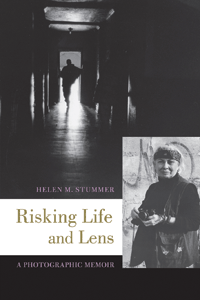

<body bgcolor="#FFFFFF" text="#000000" link="#0000FF" vlink="#CC0000" alink="#CC0000"><center><hr width="350" size="1" align="center" noshade>A poignant memoir of a woman who documented social injustice with her camera<hr width="350" size="1" align="center" noshade><p><a href="https://cdcshoppingcart.uchicago.edu/Cart/ChicagoBook.aspx?ISBN=&&PRESS=temple" target="_top">Buy this book!</a> | <a href="https://cdcshoppingcart.uchicago.edu/Cart/Cart.aspx?PRESS=temple" target="_top">View Cart</a> | <a href="https://cdcshoppingcart.uchicago.edu/Cart/Cart.aspx?PRESS=temple" target="_top">Check Out</a></p><p></p></center><!--none//--><h1 class = "booktitle">Risking Life and Lens</h1> <h1 class = "subtitle">A Photographic Memoir</h1>
<h3>Helen M. Stummer</h3>
paper: $34.95, Feb 17<BR>EAN:&nbsp;978-1-4399-1457-1<BR><font color=#990033>Not Yet Published Preorder</FONT><font size=-7><br>&nbsp;</font></p><p class="info">cloth: $125.50, Feb 17<BR>EAN:&nbsp;978-1-4399-1456-4<BR><font color=#990033>Not Yet Published Preorder</FONT><font size=-7><br>&nbsp;</font></p><p class="info"></p></td></tr></table>
<BR> <p class="info">246 pp<BR> 6.125 x 9.25<BR> 1 figs., 159 halftones <p class="info"><font size=-7>&nbsp;</font></p><p class="info">
</P><BLOCKQUOTE><p>
"<i>Helen M. Stummer's&nbsp;</i>Risking Life and Lens<i>&nbsp;is an extraordinarily personal glimpse into the life and work of a photographer who has spent her career consumed with documenting social injustice and those it has affected most. Stummer turns her lens on the Lower East Side and Newark with a levity reminiscent of Helen Levitt's photographs of children and a direness evocative of Jacob Riis's images of the tenements of New York.&nbsp;These seemingly disparate qualities combine to make Stummer's photographs both captivating and relevant.&nbsp;This book is a must-read for anyone interested in the humanity of our urban cities</i>."-<b>John&nbsp;Cyr</b>, photographer and author of <i>Developer Trays</i>
<br></BLOCKQUOTE>
<p>
For more than forty years, Helen M. Stummer has captured images depicting the dignity, humanity, and suffering of people living in conditions of poverty. Her efforts taught her to understand firsthand the resilience of people living in insufferable conditions. In her inspiring memoir, <i>Risking Life and Lens</i>, Stummer recounts her experiences as a socially-concerned documentary photographer whose passion for her work overcame her fears.<br>
<p>Stummer's images, from the mean streets of Manhattan and Newark, New Jersey, to the back woods of Maine and the mountains of Guatemala, expose the myths of poverty and serve as a metaphor for her challenges in her own life. The 159 photographs reproduced here recount Stummer's journey as an artist and her personal quest for truth.<br>
<p><i>Risking Life and Lens</i> shares Stummer's work and educational efforts and it provides valuable insights about race, class, and social justice-issues that continue to divide the country and the world. Her work has created change in both her own life and the lives of those who view it.
<br>
<P CLASS="top"><A HREF="#top">BACK TO TOP</A></P>&nbsp;<h2 class="inpageheading"><A NAME="excerpt"></a>Excerpt</h2><p>
<A HREF="http://www.temple.edu/tempress/chapters_2400/2440_ch1.pdf"><p>&#11; Read the Introduction (pdf).</A>
<br>
<P CLASS="top"><A HREF="#top">BACK TO TOP</A></P>
<BR>&nbsp;
&nbsp;<P>
<h2 class="inpageheading"><A NAME="contents"></a>Contents</h2><P><SPAN STYLE="font-family: 'Verdana';font-size: 13px;" >Foreword &bull; Truth Be Told: Restating the Obvious, by William Weiner<BR><BR>1. It Began with a Walk<BR>2. Storms in Newark<BR>3. To Maine and Beyond<BR>4. Doing and Teaching<BR>5. Bringing It All Home<BR>6. Coming Full Circle<BR><BR>Acknowledgments</SPAN></P>
<P CLASS="top"><A HREF="#top">BACK TO TOP</A></P>
</P><BR>&nbsp;
<H2 class="inpageheading"><A NAME="author bio"></a>About the Author(s)</H2><p>
<b>Helen M. Stummer </b>is a New Jersey-based social documentary photographer and Visual Sociologist whose work is included in the collections of the Library of Congress, the International Center of Photography in Manhattan, the Museum of the City of New York, the Brooklyn Museum, and Rutgers University Libraries Special Collections in New Brunswick. She is Associate Professor Emerita of Photography and Photojournalism at the County College of Morris and the author of <i>No Easy Walk: Newark, 1980-1993</i> (Temple). She received grants from the George and Helen Segal Foundation in 2011-2012 and the New Jersey State Council on the Arts in 1995 and 2003 and a Distinguished Alumni Award from Kean University in 2012. Visit her online at hmstummer.com.
<br>
<P CLASS="top"><A HREF="#top">BACK TO TOP</A></P>
<p><h2 class="inpageheading"><a name="subjects"></a>Subject Categories</h2> <p><a href="http://www.temple.edu/tempress/art.html" target="_top">Art and Photography</a> <br><a href="http://www.temple.edu/tempress/biography.html" target="_top">Biography/Memoir/Autobiography</a> <br><a href="http://www.temple.edu/tempress/american.html" target="_top">American Studies</a> <br><a href="http://www.temple.edu/tempress/history.html" target="_top">History</a> <br><a href="http://www.temple.edu/tempress/sociology.html" target="_top">Sociology</a> </p>
</p>
<P>
</P>
<p align="center"><a href="https://cdcshoppingcart.uchicago.edu/Cart/ChicagoBook.aspx?ISBN=&&PRESS=temple" target="_top">Buy this book!</a> | <a href="https://cdcshoppingcart.uchicago.edu/Cart/Cart.aspx?PRESS=temple" target="_top">View Cart</a> | <a href="https://cdcshoppingcart.uchicago.edu/Cart/Cart.aspx?PRESS=temple" target="_top">Check Out</a></p><p><font face="Arial" size="1"><a href="copyright.html" onMouseOver="window.status='Web Copyright Policy';return true;" onMouseOut="window.status=''" title="Web Copyright Policy">&copy;</a> 2017 <a href="http://www.temple.edu" target="new" onMouseOver="window.status='Link to Temple University home page';return true;" onMouseOut="window.status=''" title="Link to Temple University home page">Temple University</a>. All Rights Reserved. http://www.temple.edu/tempress/titles/2440_reg.html</font></p>